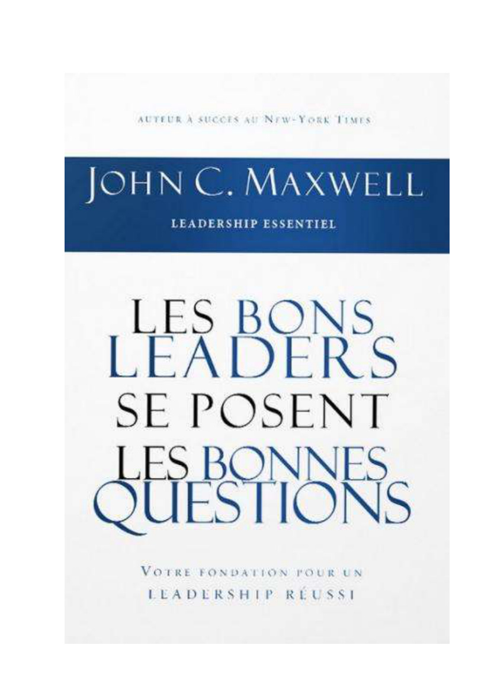

savoirs
Les bons leaders se posent les bonnes questions


Carte d’identité
- Auteur
- John C. Maxwell
- Genre
- savoirs
- Éditeur
- Non vérifié dans ce fichier
- Année
- Non confirmé
- ISBN
- Non confirmé
- Fichier
- 540 pages PDF
Résumé du livre
L’auteur organise son propos en deux parties : les questions qu’il se pose et celles que lui adressent d’autres dirigeants. Il traite notamment du leadership personnel, des équipes, des conflits et de la transmission.
Sections et chapitres · 10 repères paginés
Synthèses extractives de repérage fondées sur le texte des sections. Elles ne remplacent pas des résumés analytiques exhaustifs.
01Pourquoi les questions sont-elles si importantes ?PDF p. 9
Questions : depuis quarante ans, je pose des questions sur le thème du leadership. Vous pourriez penser qu'avec le temps et les milliers de réponses, les questions sont devenues moins importantes pour moi. Sans les conseils avisés et les réponses perspicaces que j’ai reçues aux questions…
Lire à cette page ↗02Quelles questions dois-je me poser en tant que leader ?PDF p. 49
En tant que jeune leader débutant dans ma carrière, j'étais toujours pressé. Rempli de passion et de vision, j'avais un programme urgent à poursuivre, ce qui m'a incité à essayer d'obtenir l'adhésion des autres. J'ai donné beaucoup de directives et posé très peu de questions à cause de…
Lire à cette page ↗03Quelles questions dois-je poser aux membres de mon équipe ?PDF p. 87
Si je vous demandais d’imaginer de grands moments de leadership, quels genres de choses vous viendraient à l’esprit ? Envisagez-vous des dirigeants communiquant des messages inspirants à un public, comme celui-ci ? "Jamais, jamais, n'abandonnez jamais." - Winston Churchill « Ne demandez…
Lire à cette page ↗04Que dois-je faire pour me diriger avec succès ?PDF p. 146
Lorsque nous avons commencé à parler à mes abonnés sur Twitter, à mes fans sur Facebook et aux entraîneurs de l'équipe John Maxwell de l'importance des questions, et que nous leur avons demandé de me poser des questions de leadership auxquelles ils voulaient obtenir des réponses, nous…
Lire à cette page ↗05Comment fonctionne le leadership ?PDF p. 199
Lorsque j'ai commencé ma carrière, le leadership n'était pas une chose à laquelle je pensais. Il y avait des choses que je pensais importantes, comme l'attitude. Quand j'étais au lycée, mon entraîneur m'a nommé capitaine parce qu'il disait que mon attitude était bonne, donc c'est devenu…
Lire à cette page ↗06Comment puis-je me lancer dans le leadership ?PDF p. 262
Il y a une organisation qu’ils souhaitent créer ou une tâche qu’ils souhaitent accomplir. Ils commencent à fournir un service ou à créer un produit, et si cela réussit, ils ont rapidement besoin d'aide. Lorsqu’ils embauchent leur premier employé, ils commencent à…
Lire à cette page ↗07Comment puis-je résoudre les conflits ?PDF p. 310
Comment puis-je résoudre les conflits et diriger des personnes difficiles ? J'ai mentionné au chapitre quatre que les questions les plus posées que je reçois concernent le leadership personnel. Le domaine dans lequel je reçois le deuxième plus grand nombre de questions est celui de la…
Lire à cette page ↗08Comment puis-je développer des leaders ?PDF p. 478
Si vous voulez maximiser votre potentiel et faire la différence, vous devez devenir un meilleur leader. Si vous voulez avoir un impact sur votre monde, vous devez aider les autres à devenir de meilleurs leaders. Les dirigeants sont difficiles à trouver, difficiles à former et difficiles à…
Lire à cette page ↗